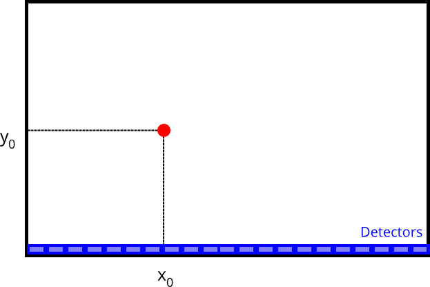
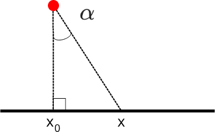

MLM Fit - Radiator
Imagine you are in a room where a hidden radiation source is located, and your task is to pinpoint its location \((x_0, y_0)\).
We suppose that the radiator emits uniformly in all direction. However, our detectors are located along only one wall, as illustrated in the figure bellow. NOTE: we measure exact positions, not just index of the pixel!
{kind=link}

So, how do you determine where this source is?
In this task, we will utilize the method of maximum likelihood, a statistical approach that helps us estimate the position of the source based on these measured values.
Theory
How it radiates
As mentioned before, the radiator emits uniformly in all directions, in other words $$ \text{pdf}(\alpha) = \frac{1}{2\pi} $$ for a given angle \(\alpha\). The constant was selected so that the distribution is normalized $$ \int_0^{2\pi} \text{d}\alpha\, \text{pdf}(\alpha) = 1. $$
However, we work in the Cartesian coordinate system, so we have to perform a transformation of this probability distribution function. Again, with the help of the following figure we can write
{kind=link}

The transformation of the probability distribution function is then
$$ \text{pdf}(x|x_0,y_0) = \text{pdf}(\alpha = h(x)) \cdot \bigg\lvert\frac{\partial \alpha}{\partial x}\bigg\rvert = \dots = \frac{1}{2\pi} \frac{y_0}{(x-x_0)^2 + y_0^2}, $$ where we emphasized the dependence on the initial radiator position. This distribution is called Cauchy, but you could know it as a non-relativistic Breight-Wigner distribution.
Finding the likelihood function
Now we assume we have measured the events using the detectors along one of the walls, as depicted in the initial picture. Therefore, we have a set of measurements \(\{x_i\}\), where \(x_i\) corresponds to an event that was detected by a detector at the position \(x_i\). We could plot this data in a histogram.
These distributions are dependent on the position of the initial source, and therefore we talk about conditional probability. Therefore, this distribution is formally given by $$ \text{pdf}(\{x_i\} | x_0, y_0). $$
Using the Bayes' theorem, we can write $$ p(x_0, y_0 | \{x_i\}) \sim \text{pdf}(\{x_i\} | x_0, y_0) \cdot \text{prior}(x_0, y_0). $$
The prior determines what we know about the initial position of the source. In principle, we can say that this corresponds to a uniform distribution within the size of the room and the prior is therefore constant and thus irrelevant for the position of the extreme.
We rely on Bayes theorem because we want to determine the position of the source based on the data we have, i.e. we are interested in maximum of $$ p(x_0, y_0 | \{x_i\}). $$ However, what we assume we know is $$ \text{pdf}(\{x_i\} | x_0, y_0). $$ which is our likelihood function - with the same extreme.
In fact, what we assume to know is the pdf for a single random variable (= this is the function we fit on our data) $$ \text{pdf}(x_i | x_0, y_0). $$ and for the pdf of the whole dataset \(\{x_i\}\) we assume independency. Therefore the joint pdf for \(N\) data is $$ \text{pdf}(\{x_i\} | x_0, y_0) = \prod_{i=1}^N \text{pdf}(x_i|x_0,y_0) = \prod_{i=1}^{N} \left(\frac{1}{2\pi} \frac{y_0}{(x_i-x_0)^2 + y_0^2} \right) $$
The last step is to make a natural logarithm of our Likelihood:
Note
Note that we are fitting the actual data, not a histogram! i.e. we are not binning the data => This is UN-BINNED Maximum Likelihood Fit!
Code and homework
Task
Generate a toy data from the detectors and then use the maximum likelihood method to estimate the most probable position of the source, based on the data.
Output of the program should be the real position of the source, the most probable position of the source and a heatmap (= 2D histogram) illustrating the value of the likelihood function at different points in the room (representing potential positions of the source).
The following list is a suggestion of how to approach this:
- Select the real position of the source. Choose \(y_0\) within the range (0 - 1) - as \(y\) coordinate is determined from the width of the measeured distribution, it is not very sensitive within a small room (in \(x\) direction).
- Generate the hits at the detectors using the distribution function found in the How it radiates section.
- Define the likelihood function.
- Create a 2D histogram of potential positions of the source (i.e. a grid) and evaluate the likelihood function for each of these points. (i.e. you need a sequence of three loops: over \(x_0\), over \(y_0\), and over \(x_i\) )
- Create a heatmap (2D histogram) from this.
- Find the maximum of this evaluated likelihood function and mark it as the most probable location of the source.
Do not forget that we work in a room of finite dimensions, so limit the data generation to that.
Output
{kind=link}